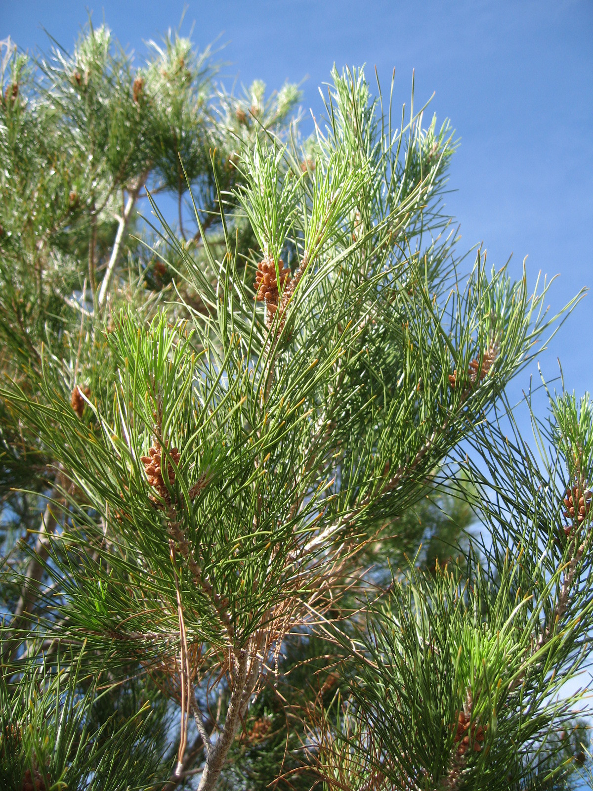
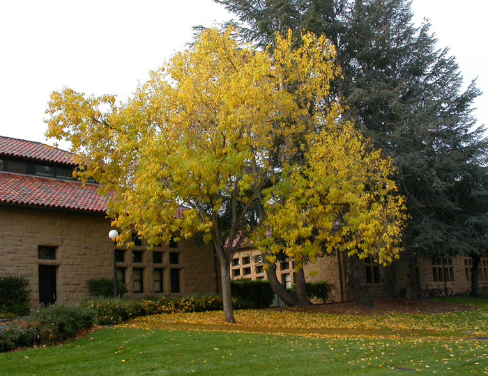
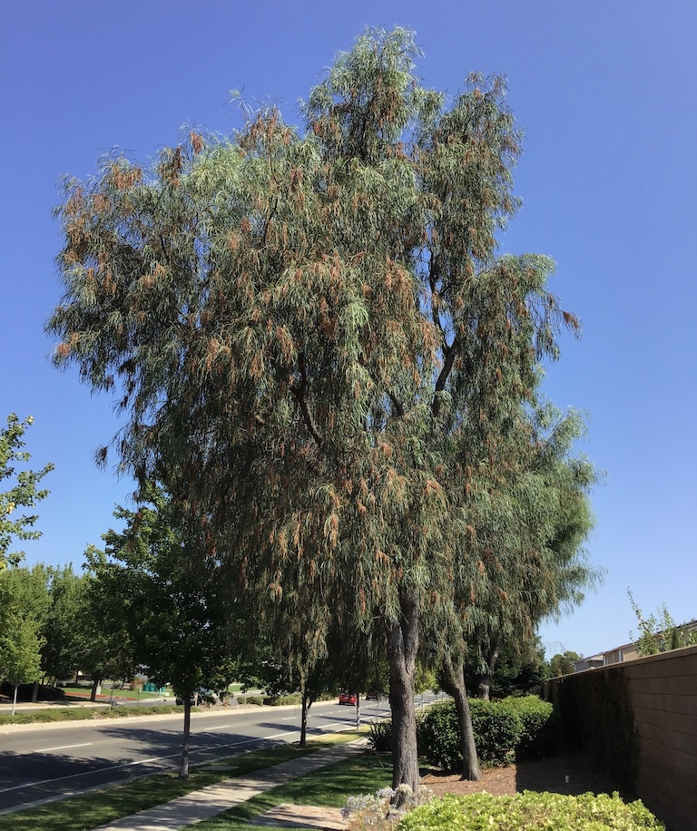
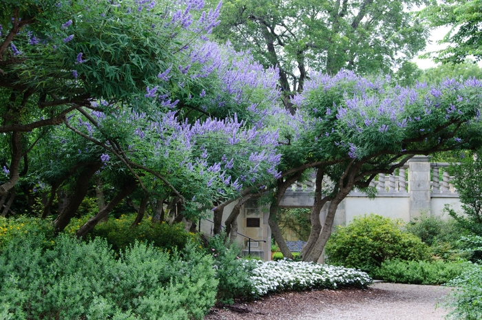
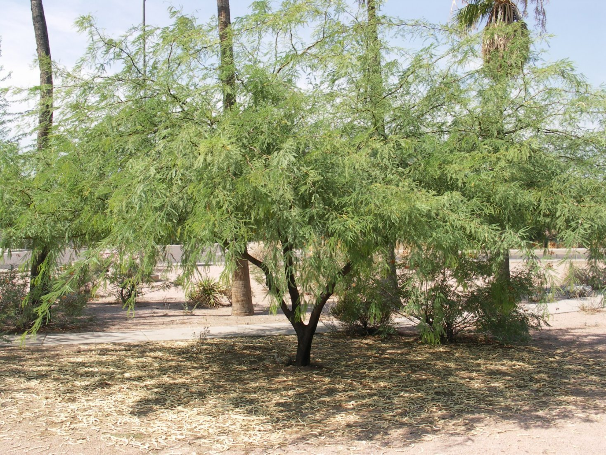
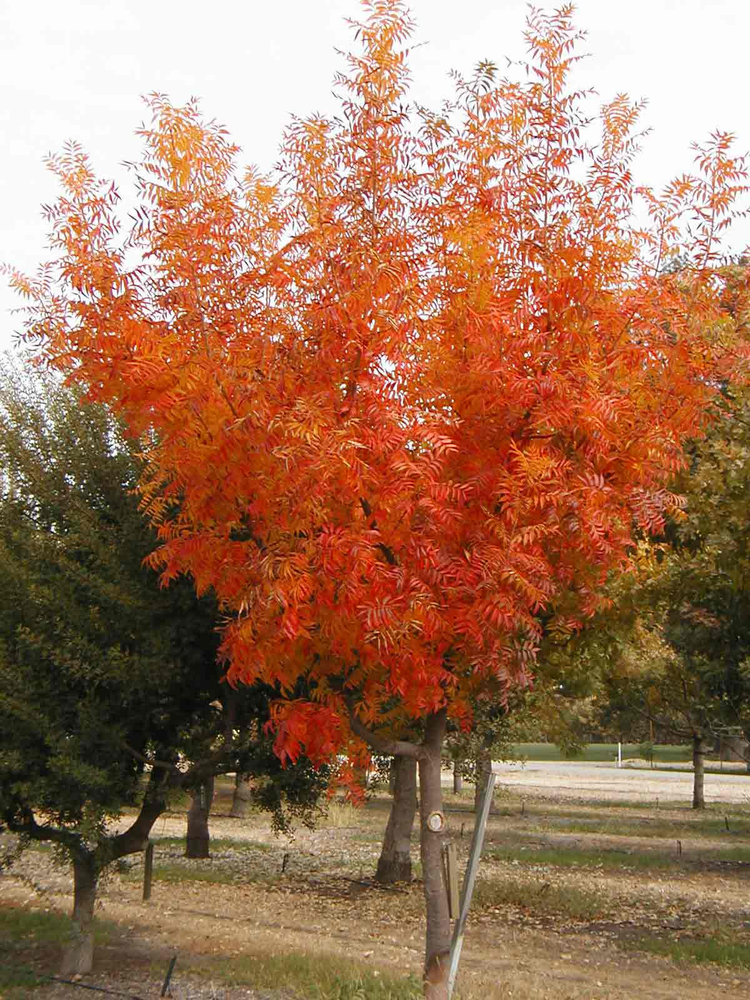
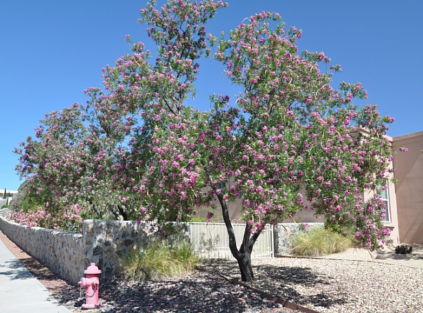
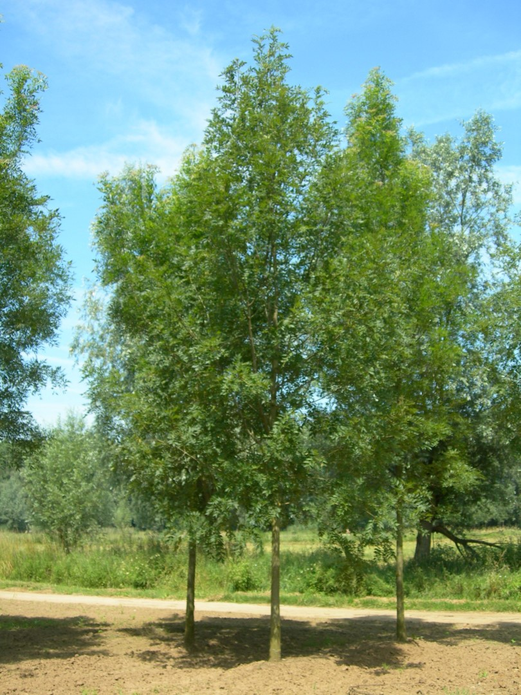
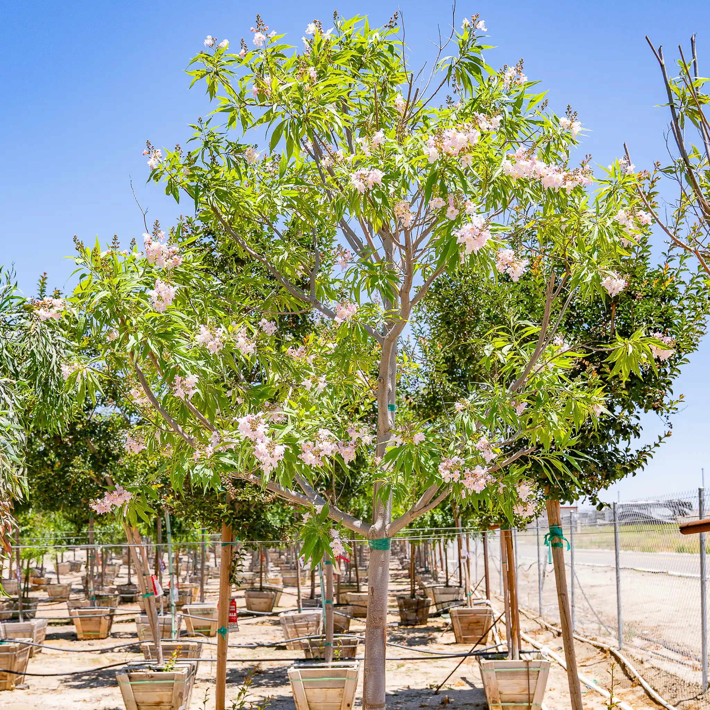

Current Koppen Climate Zone: BWk
Cold Desert (BWk) - Cold winters, hot summers, and low precipitation.
Projected Koppen Climate Zone in 2100: BWh
Hot Desert (BWh) - Extremely hot summers, mild winters, and very little precipitation year-round.
2023 Population: 4,500,000.
Average SUHI daytime: -0.42°C
Average SUHI nighttime: 1.21°C
Climate in 2100 Similar to current Las Vegas
Urban Trees Common in Las Vegas / BWh

Pinus brutia var. eldarica (Eldarica pine)

Fraxinus velutina (Arizona ash)
Washingtonia robusta (Mexican fan palm)

Acacia stenophylla (Shoestring acacia)

Vitex agnus-castus (Chaste tree)

Prosopis chilensis (Chilean mesquite)

Pistacia chinensis (Chinese pistache)

Chilopsis linearis (Desert willow)

Fraxinus angustifolia (Narrow-leafed ash)

Chitalpa tashkentensis (Chitalpa)